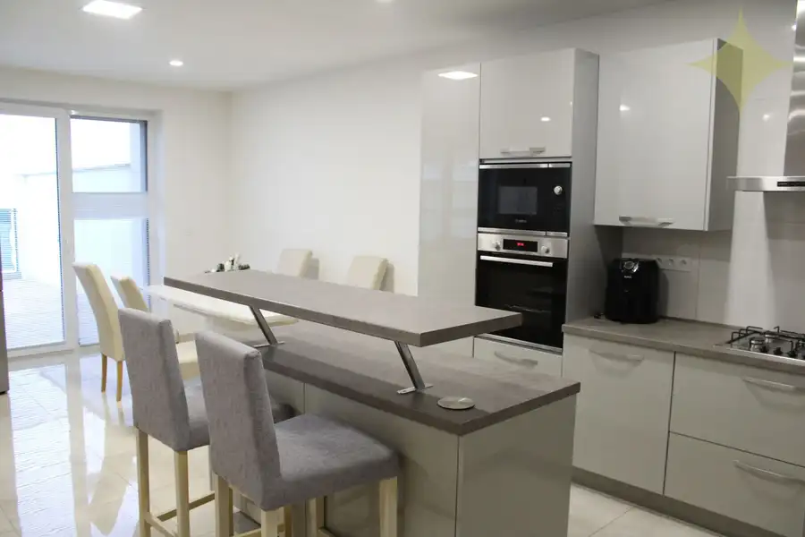
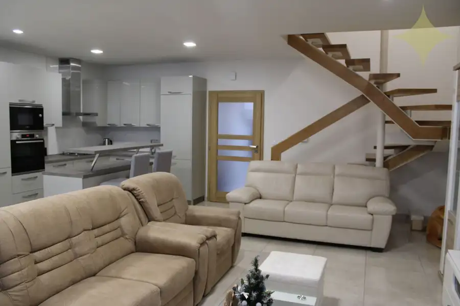
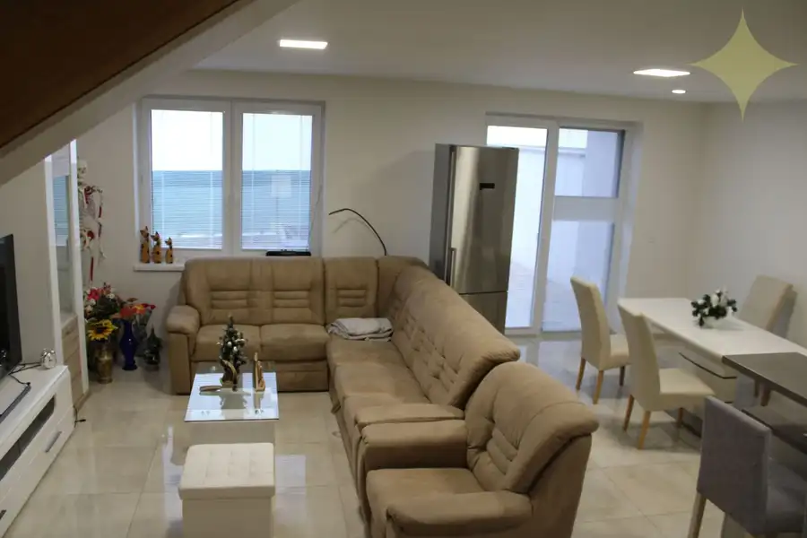
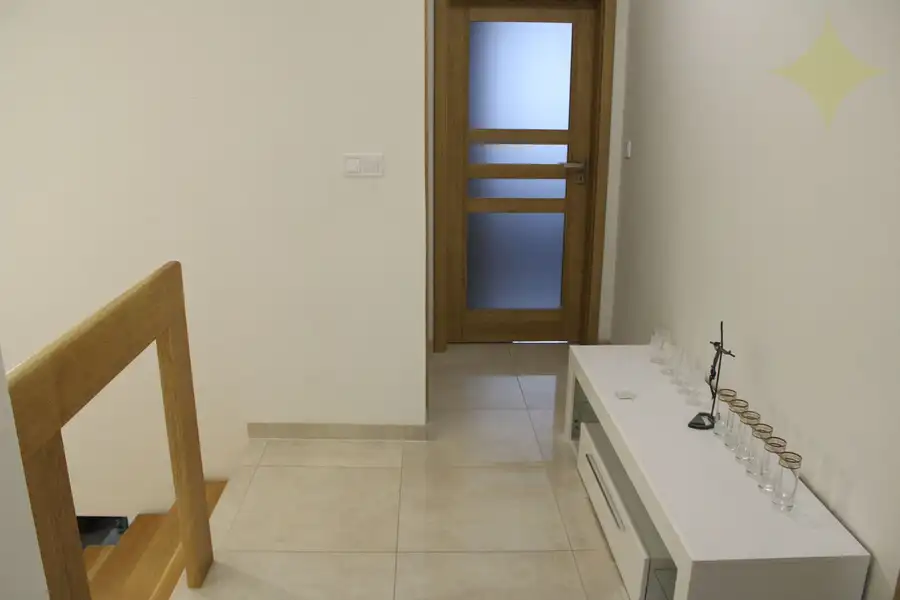
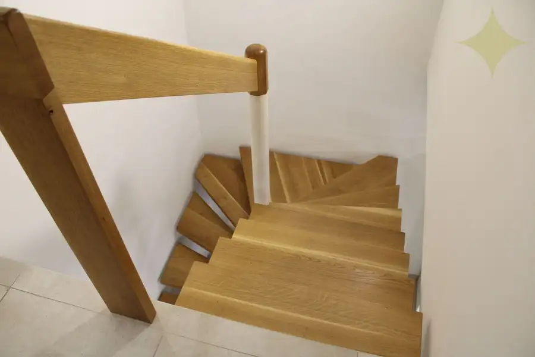

Na PREDAJ Novostavbu- 4-izbový rodinný dom s garážou, okres Prievidza, ul. R. Jašíka
Prievidza






- Plocha150 m²
- StavNovostavba
- VlastníctvoOsobné
O nehnuteľnosti
Realitná kancelária Premium living Vám ponúka na predaj novostavbu 4 -izbový rodinný dom v meste Prievidza, ul. Rudolfa Jašíka.Dom:Úžitková plocha: 149 m²Zastavaná plocha (m²): 86 m²Rozloha pozemku (m²): 171 m²Inžinierske siete: obecná voda, elektrika, plyn, kanalizáciaDispozícia domu:**Dispozícia nehnuteľnosti:** Dom sa skladá z dvoch podlaží s funkčným rozdelením priestorov. **Prvé nadzemné podlažie** začína vstupnou predsieňou, z ktorej sa vľavo nachádza vstup do kúpeľne s WC. Oproti je umiestnený priestranný obývací priestor spojený s kuchyňou a jedálňou, ktorý má výstup priamo na pozemok. Na druhé podlažie vedie štýlové drevené schodisko. **Druhé nadzemné podlažie** je rozdelené praktickou chodbou. Oproti schodisku sa nachádza ďalšia kúpeľňa s WC. Vľavo od chodby sú situované dve obytné izby ideálne pre študentov, a vpravo je umiestnená hlavná spálňa so šatníkom a dodatočná menšia samostatná miestnosť, ktorá ponúka flexibilné využitie.Vybavenie domu:Dom sa predáva čiastočne zariadený. Vo vstupnej verande sa nachádza vstavaná skriňa na mieru. Na prvom poschodí je kúpeľňové jadro s WC, sprchovacím kútom, umývadlom so skrinkou, zrkadlom s osvetlením a plynovým kotlom na kúrenie. Kuchyňa je vybavená modernou kuchynskou linkou na mieru so zabudovanými spotrebičmi vrátane umývačky riadu, mikrovlnky, elektrickej rúry, plynového sporáka, digestora a barového pultu. Na druhom poschodí sú vo všetkých obytných izbách vstavané skrine na mieru. K dispozícii je samostatná miestnosť -priestor pre práčku a sušičku. Druhé kúpeľňové jadro s WC obsahuje sprchovací kút, vaňu, umývadlo so skrinkou a zrkadlo s osvetlením.Technický stav:Dom predstavuje novú stavbu moderného dvojpodlažného rodinného domu s garážou, ktorý tvorí súčasť súčasnej štvrte v radovej zástavbe. Objekt bol kompletne zateplený a opatrený novou fasádou, pričom strecha je pokrytá kvalitnou krytinou typu Ytong. V celom dome je inštalované teplovodné podlahové kúrenie vrátane systému ohrevu teplej vody, pričom každá miestnosť disponuje vlastným termostatom pre individuálnu reguláciu teploty. Interiér charakterizuje použitie kvalitnej keramickej dlažby v celom dome, moderné interiérové dvere s drevenými obložkami a znížené sadrokartonové stropy s bodovým LED osvetlením. Dom obsahuje drevené schodisko vyrobené na mieru. Pozemok je upravený zamkovou dlažbou a ohradený múrom v kombinácii s pletivom. Súčasťou nehnuteľnosti je garáž vybavená automatickou bránou s diaľkovým ovládaním.Lokalita:Lokalita ponúka vynikajúcu občiansku vybavenosť s dostupnosťou všetkých potrebných služieb v blízkosti. V okolí sa nachádzajú obchodné reťazce ako Kaufland, obchodné centrum Korzo, zdravotné stredisko UNI KLINIKA pre kompletnú zdravotnú starostlivosť, základná škola a materská škôlka pre vzdelávanie detí, ďalšie nákupné centrá pre každodenné nákupy a autobusové zastávky zabezpečujúce pohodlnú mestskú dopravu. Táto infraštruktúra vytvára ideálne podmienky pre komfortné bývanie s minimálnymi prepravnými vzdialenosťami k základným službám.Platba je možná v hotovosti, alebo aj na úver. Cena nehnuteľností: 320000 € (cena je vrátane kompletného realitného a právneho servisu).Ak Vás moja ponuka oslovila, rada Vás privítam na osobnej prehliadke rodinného domu ktorú Vám zabezpečíme na čísle 0905 773 959 alebo ma kontaktujte emailom: dajana.svecova@gmail.com. Uvedená cena je vrátane provízie RK. V tejto konečnej cene je zahrnuté kompletné právne poradenstvo, vyhotovenie rezervačných zmlúv, administratívne služby na katastri nehnuteľností, poplatky za overenia podpisov u notára.
Parametre
- Druh
- Rodinný dom
- Druh domu
- Klasický dom
- Dátum zverejnenia
- 16. 09. 2026
- Energetický certifikát budovy
- nie je
- Plocha pozemku
- 171 m²
- Počet nadzemných podlaží
- 2
- Stav nehnuteľnosti
- Novostavba
- Terén pozemku
- Iný
- Typ
- Predaj
- Typ konštrukcie
- Zmiešaná
- Vlastníctvo
- Osobné
- Zastavaná plocha
- 86 m²
- Úžitková plocha
- 150 m²
Kde to je


Mohlo by Vás zaujímať
 Komerčné priestoryNové
63 000 €EXKLUZÍVNE-Na Predaj Obchodný priestor 70 m2, Handlová, Ul. 29.Augusta
Handlová
70 m²
Komerčné priestoryNové
63 000 €EXKLUZÍVNE-Na Predaj Obchodný priestor 70 m2, Handlová, Ul. 29.Augusta
Handlová
70 m²
 Komerčné priestoryNové
22 000 €Na Predaj moderná murovaná Garáž 24 m2, Handlová, okres Prievidza
Handlová
24 m²
Komerčné priestoryNové
22 000 €Na Predaj moderná murovaná Garáž 24 m2, Handlová, okres Prievidza
Handlová
24 m²
 Komerčné priestoryNové
14 500 €Na Predaj murovaná Garáž 20 m2, Handlová, okres Prievidza
Handlová
20 m²
Komerčné priestoryNové
14 500 €Na Predaj murovaná Garáž 20 m2, Handlová, okres Prievidza
Handlová
20 m²